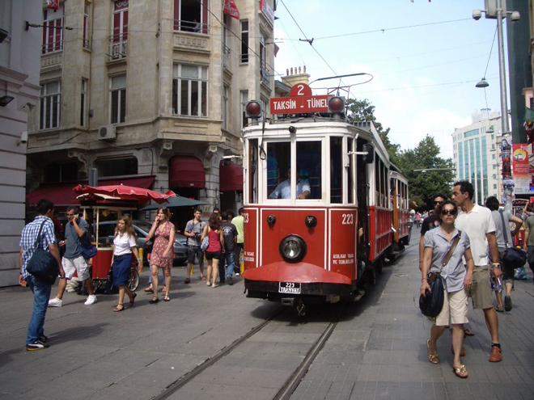
.
For centuries Beyoglu, a steep hill north of the Golden Horn, was home to the city's foreign residents. First to arrive here were the Genoese. As a reward for aiding the reconquest of the city from the crusader-backed Latin Empire in 1261, they were given the Galata area which is now dominated by the Galata Tower.
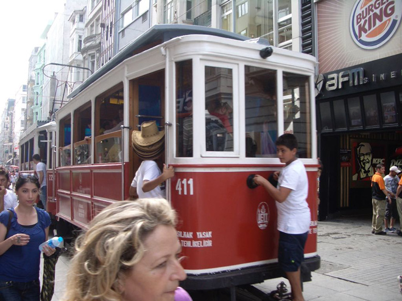
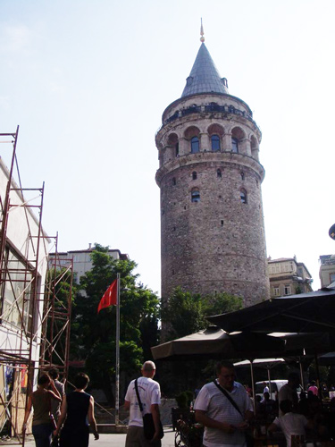
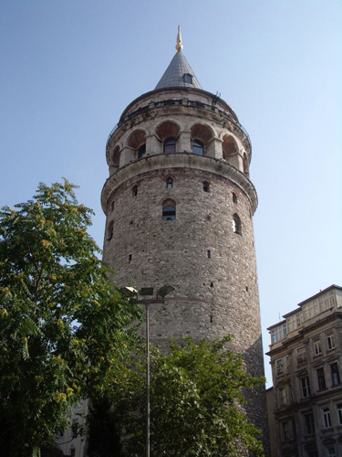
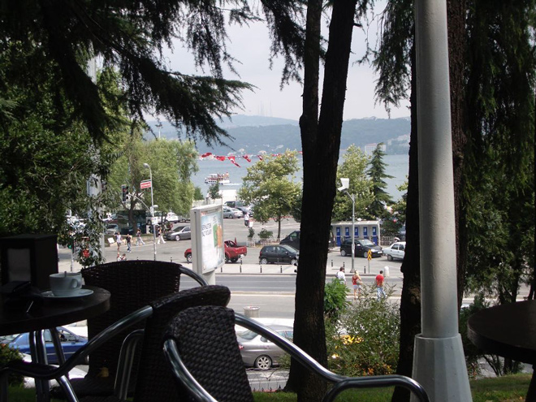
During the Ottoman period, Jews from Spain, Arabs, Greeks and Armenians settled in communities here. From the 16th century the European powers established embassies in the area to further their interests within the lucrative territories of the Ottoman Empire. The district has not changed much in character over the centuries and is still a thriving commercial quarter today.
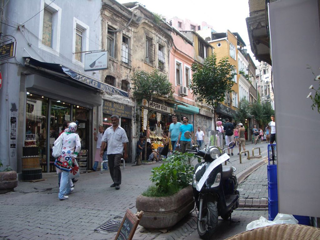
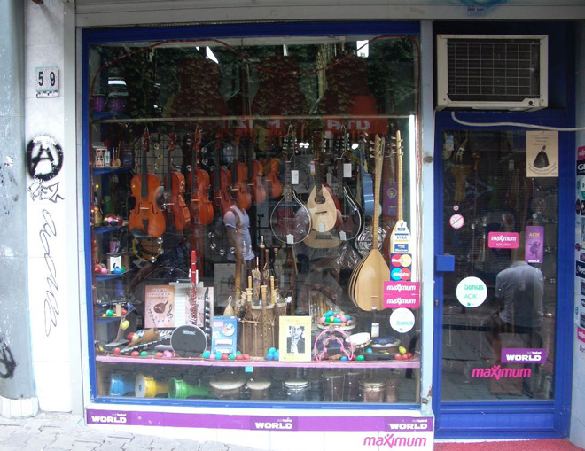
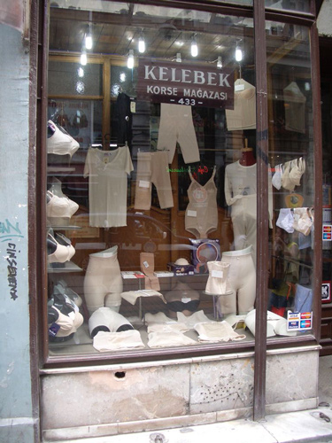
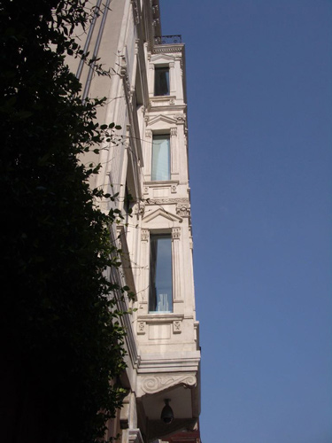
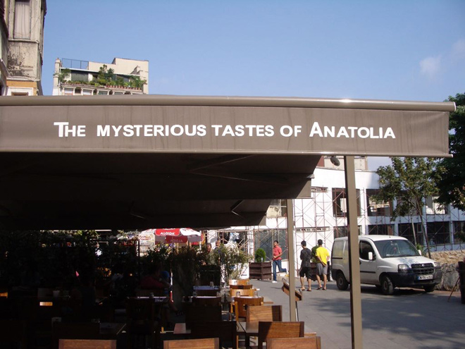
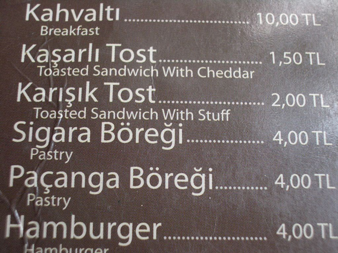
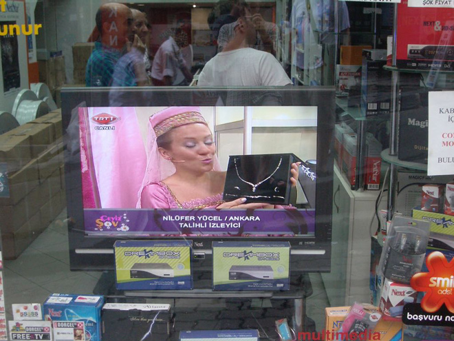
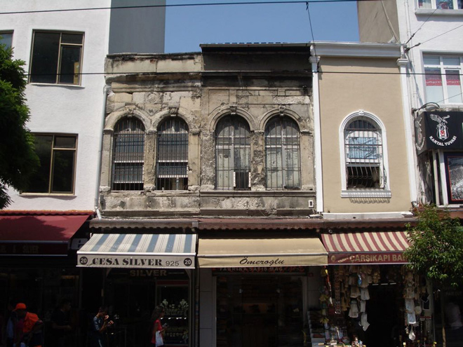
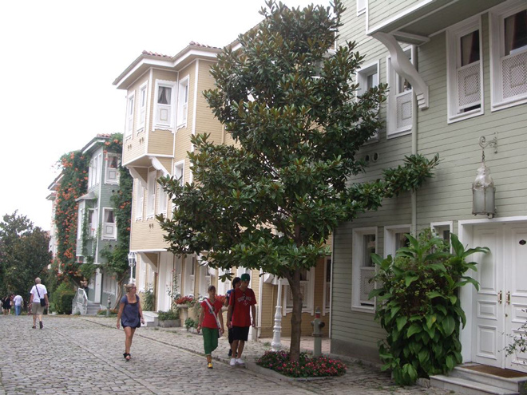
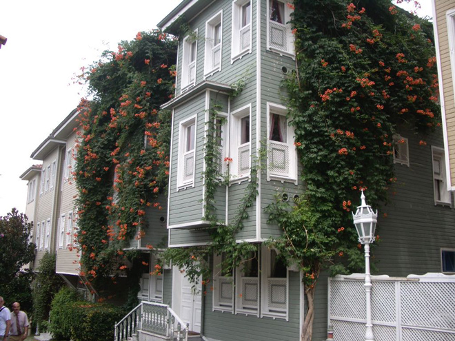
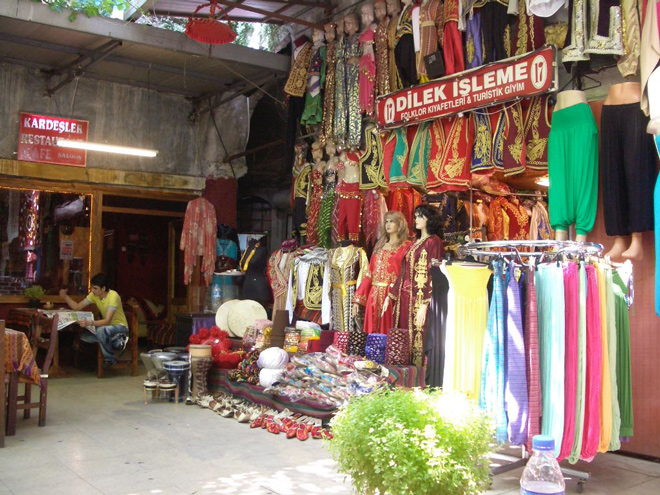
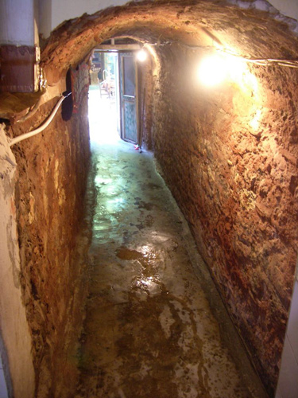
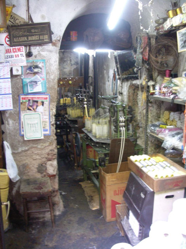
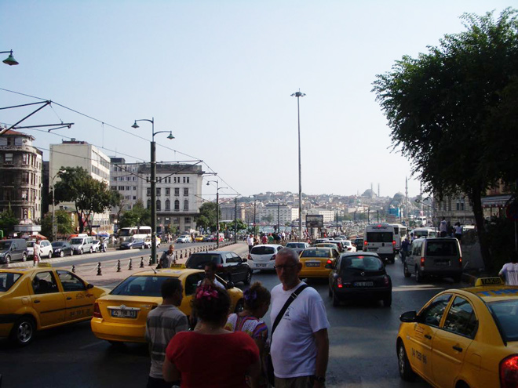